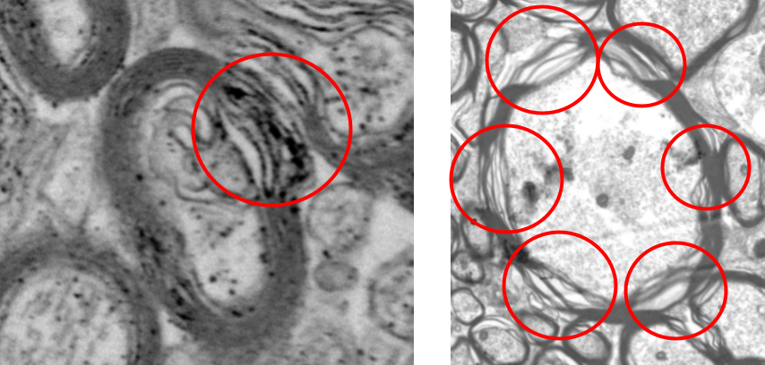
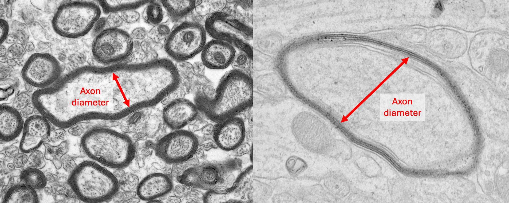
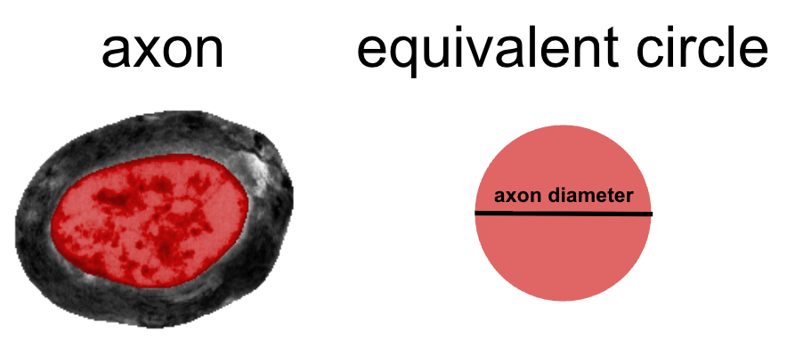
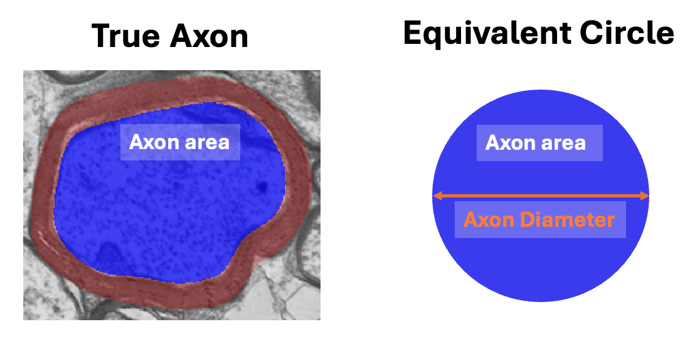
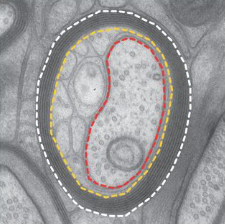

Q1
Transmission Electron Microscopy (TEM) is suitable to quantify the g-ratio.
Q2
Scanning Electron Microscopy (SEM) is suitable to quantify the g-ratio.
Q3
Bright-Field (BF) Optical Microscopy is suitable to quantify the g-ratio.
Q4
Coherent Anti-Stokes Raman Scattering (CARS) microscopy is suitable to quantify the g-ratio.
Q5
If myelin splitting/decompaction affects > 20% of an axon's contour, the axon should be excluded from the g-ratio dataset.

20% of the axon contour affected." width="60%">
Q6
In a given image, if >20% of all axons have artefacts, the image should not be used for g-ratio quantification.
Q7
If axons are omitted from g-ratio analysis due to fixation artefacts (see image), publications should include a visual guide illustrating acceptable vs. unacceptable axon quality. (note: if axons have abnormalities due to the disease models but are not excluded, they would go in the accepted column.)

Q8
For MANUAL measurements, a line-based approach (tracing one or more diameter lines directly on the axon) should be the recommended method.
Q9
When using line-based measurements, a single measurement per axon and a single measurement per myelin is sufficient.
Q10
When using line-based measurements, the fiber diameter (or myelin thickness) should be measured along the same axis as the axon diameter line measurement.

Q11
If using single line-based measurements (i.e., a single measurement per axon), axon diameter in non-circular axons should be measured along the shortest axis.

Q12
For AUTOMATED/semi-automated pipelines, area-based measurements (derived from segmentation masks) should be the recommended method.

Q13
When using area-based measurements, an equivalent circle diameter to the segmented area should be the default axon diameter approximation.

Illustration of the equivalent circle diameter approximation for multiple axons.

Q14
When using area-based measurements in conjunction with the equivalent circle diameter, it is necessary to exclude axons according to a predefined criterion for circularity (or roundness).
Q15
When using area-based measurements, the minor axis of an ellipse fitted to the segmented area should be the default axon diameter approximation, to account for non-orthogonal sections and irregular shapes.

Illustration of the ellipse-based diameter approximation for multiple axons.

Q16
In the presence of enlarged inner tongue, axon diameter should be measured within the axon, and fiber diameter should exclude the area between the axolemma and the compact myelin.
For example, with line-based measurements, the axon should be measured inside the red contour, and the myelin thickness inside the compact myelin. With area-based measurements, the area between red and yellow contours should be removed from the total fiber area.
Illustration below adapted from Figure 4, “White matter integrity in mice requires continuous myelin synthesis at the inner tongue” by Meschkat et al., Nature Communications (2022), used under CC BY 4.0 / Cropped from original.

Other example

Q17
Publications reporting g-ratio should include: the imaging modality and parameters, the effective pixel dimension, the measurement method used (line/contour/area), the diameter approximation (circle/ellipse), and any circularity or quality filters applied.
Q18
Data and segmentation masks should be shared in a public repository (e.g., DANDI, OSF, Zenodo) alongside the publication, with well-documented quality control traceability (who performed measurements, inter-rater reliability metrics).
Q19
Are there any important methodological considerations for g-ratio quantification that are missing from this survey?
Q20
Do you have concerns about the scope or framing of the consensus recommendations as outlined above?